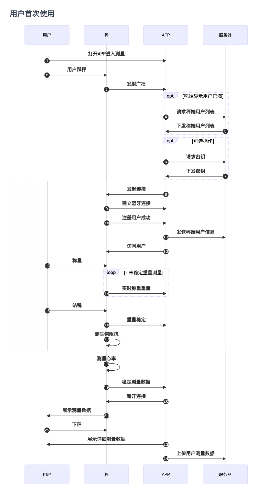
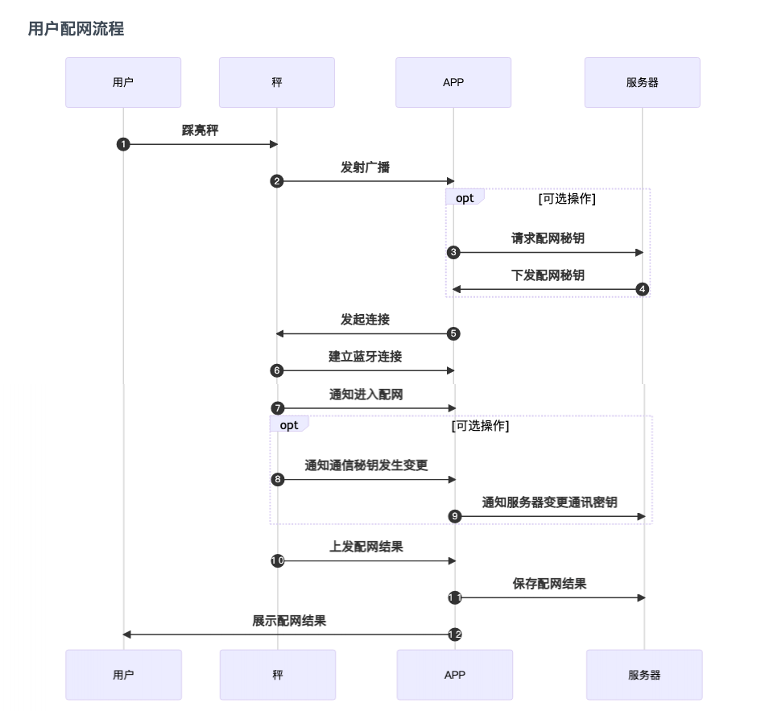
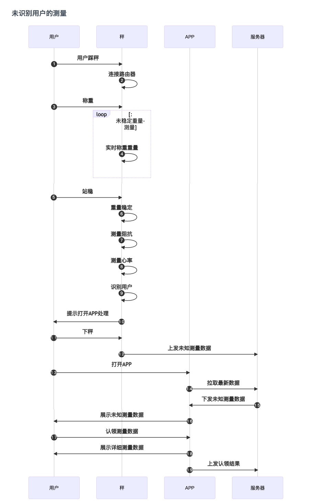

用户秤
用户秤是我司推出的一款支持直接在秤显示屏上展示测量结果智能设备。用户可以在注册秤端用户下,脱离APP称量后在秤端显示测量数据结果,提升用户体验。 用户秤从通信方式上分为蓝牙秤与蓝牙WiFi双模秤。在使用上,两款设备在蓝牙模式下工作模式是相同的。蓝牙WiFi双模秤会相较蓝牙款会多出WiFi模式下测量等功能。 针对蓝牙WiFi双模秤除了使用蓝牙功能需要对接SDK外,还需要配合服务器集成Docker。
使用测量简述
在秤与APP通过蓝牙连接后,APP向秤输送本次测量用户的基本信息。本次测量完成时，秤端会显示本次测量结果并将测量数据详情上传到APP中。
目前 用户秤设备最多允许存储 8 位用户信息，秤端的用户需要通过蓝牙连接的方式向设备注册用户。当注册满 8 个用户后，再次向设备注册用户时，秤端会返回注册失败的状态。因此建议您注册用户之前，下发秤端已注册用户列表，以避免无效用户占据资源。
当向设备注册用户时，注册成功时，设备会记录该用户秘钥(非必传)同时返回该用户的唯一序列号。因此注册该用户成功后，app 需要将设备返回该用户的序列号保存起来。当通过蓝牙连接更新用户资料或用户通过蓝牙连接测量时，需要先使用用户序列号访问秤端的指定用户成功后才能进行。同时序列号也是作为设备上传测量数据属于哪个注册用户的标识，以及作为删除用户的必要条件。
注册用户
秤端能缓存已经注册的用户信息，通过已经注册的用户信息识别未连接蓝牙时的测量数据属于哪个用户，从而使用识别到的用户信息获取详细测量数据
访问用户
对秤进行操作时都需要先访问已注册的用户，访问成功后才能进相应的操作，比如修改用户信息、连接蓝牙进行测量等
访客模式测量
访客模式是秤体提供的一个公共通道的测量方式，该方式无需注册用户直接使用，访客模式使用的是临时用户，该用户的存在时间为从连接到断开，当设备断开连接时临时用户即销毁，同时在访客模式下不会产生与接收存储数据
设备协议简述
协议涉及的方面：
- 用户方面
- 年龄
- 身高
- 性别
- 测量方面
- 测量状态
- 实时体重VA
- 存储数据
- 测量数据
- 其他
- 单位
该设备的涉及的方面比较多，并且协议之间的通讯过程以及使能方式都要严格的要求，我司目前已经将其封装成 SDK 方便接入使用。
不同情况下的工作流程





具体接入设备实现
一、初始化QNSDK
使用QNBleApi.initSdk进行初始化QNSDK。
二、设置监听器
1. 设置系统蓝牙状态监听
设置系统蓝牙状态监听QNBleApi.setSysBleStateListener,获取手机系统蓝牙状态。
2.设备扫描设备监听
设备扫描设备监听QNBleApi.setBleDeviceDiscoveryListener, 接收SDK回传发现设备信息。
3.设置蓝牙连接变化监听
设置蓝牙连接变化监听QNBleApi.setBleConnectionChangeListener, 接收SDK回传设备链接状态变化。
4.设置蓝牙连接变化监听
设置测量数据监听QNBleApi.setDataListener,接收SDK回传测量状态与测量数据。
android 示例：
QNBleApi mQNBleApi = QNBleApi.getInstance(this);
mQNBleApi.setBleDeviceDiscoveryListener(new QNBleDeviceDiscoveryListener() {
@Override
public void onDeviceDiscover(QNBleDevice qnBleDevice) {
//扫描到的蓝牙设备回调
}
@Override
public void onStartScan() {
//启动扫描成功回调
}
@Override
public void onStopScan() {
//停止扫描后回调
}
@Override
public void onScanFail(int i) {
//扫描失败回调
}
@Override
public void onBroadcastDeviceDiscover(QNBleBroadcastDevice qnBleBroadcastDevice) {
//广播秤设备相关信息的回调
}
@Override
public void onKitchenDeviceDiscover(QNBleKitchenDevice qnBleKitchenDevice) {
//厨房秤设备相关信息的回调
}
});
mQNBleApi.setBleConnectionChangeListener(new QNBleConnectionChangeListener() {
@Override
public void onConnecting(QNBleDevice qnBleDevice) {
//正在进行连接设备，在调用连接设备后，会马上回调
}
@Override
public void onConnected(QNBleDevice qnBleDevice) {
//设备已连接成功
}
@Override
public void onServiceSearchComplete(QNBleDevice qnBleDevice) {
//设备的服务搜索完成，正常情况下会在 onConnected后面调用
}
@Override
public void onDisconnecting(QNBleDevice qnBleDevice) {
//正在断开连接，调用断开连接时，会马上回调
}
@Override
public void onDisconnected(QNBleDevice qnBleDevice) {
//断开连接，断开连接后回调
}
@Override
public void onConnectError(QNBleDevice qnBleDevice, int i) {
//出现了连接错误，错误码参考附表
}
});
mQNBleApi.setDataListener(new QNScaleDataListener() {
@Override
public void onGetUnsteadyWeight(QNBleDevice qnBleDevice, double v) {
//实时体重数据回调
}
@Override
public void onGetScaleData(QNBleDevice qnBleDevice, QNScaleData qnScaleData) {
//稳定数据回调
}
@Override
public void onGetStoredScale(QNBleDevice qnBleDevice, List<QNScaleStoreData> list) {
//存储数据回调
}
@Override
public void onGetElectric(QNBleDevice qnBleDevice, int i) {
//充电款的电池电量百分比数值回调
}
@Override
public void onScaleStateChange(QNBleDevice qnBleDevice, int i) {
//测量过程中的连接状态回调
}
@Override
public void onScaleEventChange(QNBleDevice qnBleDevice, int i) {
//秤事件的回调
}
});
iOS 示例：
//设置代理
QNBleApi *bleApi = [QNBleApi sharedBleApi];
bleApi.bleStateListener = self;
bleApi.discoveryListener = self;
bleApi.connectionChangeListener = self;
bleApi.dataListener = self;
//实现代理方法
- (void)onBleSystemState:(QNBLEState)state {
//系统蓝牙状态的回调
}
- (void)onStartScan {
//开始扫描时回调
}
- (void)onDeviceDiscover:(QNBleDevice *)device {
//发现设备时回调
//可在该发回调设备后判断是否需要连接该设备
}
- (void)onStopScan {
//停止扫描时回调
}
- (void)onConnecting:(QNBleDevice *)device {
//正在连接的回调
}
- (void)onConnected:(QNBleDevice *)device {
// 连接成功的回调
}
- (void)onDisconnected:(QNBleDevice *)device {
//设备断开连接
}
- (void)registerUserComplete:(QNBleDevice *)device user:(QNUser *)user {
//注册用户成功回调秤端用户信息
//APP可在该方法中获取到秤分配给用户的index,保存秤端用户信息
}
- (void)onGetUnsteadyWeight:(QNBleDevice *)device weight:(double)weight {
//收到实时数据回调
}
- (void)onGetScaleData:(QNBleDevice *)device data:(QNScaleData *)scaleData {
//收到稳定数据回调
}
- (void)onGetStoredScale:(QNBleDevice *)device data:(NSArray <QNScaleStoreData *> *)storedDataList {
//收到存储数据回调
}
- (void)onScaleStateChange:(QNBleDevice *)device scaleState:(QNScaleState)state {
//秤连接或测量状态变化回调
}
2. 启动扫描
在确认蓝牙已打开，安卓这边还需要检查下定位权限和定位开关。如果确认蓝牙已打开，定位权限已授权，定位服务开关已打开，则可以开始蓝牙扫描
安卓 6.0 以后，对 targetSdkVersion>=23 以上的 APP，进行蓝牙扫描需要获取定位权限，详细说明查看关于 定位服务开关不是强制性的，但是某些手机不打开这个开关，也无法扫描到设备，跟各家的手机系统相关
iOS13 系统增加了蓝牙使用权限，需要检查是否有使用权限，确认已授权并且蓝牙已打开的情况下，开始扫描
扫描方法为QNBleApi.startBleDeviceDiscovery，扫描到的设备数据，会在上面设置的扫描接口中QNBleDeviceDiscoveryListener回调。
另外有关扫描的一些特性设置，可以在QNConfig进行设置，需要设置的内容已基本覆盖。
通常 APP 会有个专门用于测量的界面，我们一般是在界面显示之后进行蓝牙扫描，界面消失的时候停止扫描。
android 示例：
QNBleApi.getInstance(context).startBleDeviceDiscovery(new QNResultCallback() {
@Override
public void onResult(int code, String msg) {
//该方法并不回到设备，而是表示扫描是否启动成功
if (code != CheckStatus.OK.getCode()) {
ToastMaker.show(ScanActivity.this,code+":"+msg);
}
}
});
iOS 示例:
//启动扫描
[[QNBleApi sharedBleApi] startBleDeviceDiscovery:^(NSError *error) {
//该处回调表示启动扫描方法是否成功
if (error) {
NSLog([NSString stringWithFormat:@"启动扫描方法失败,原因: %@",error]);
}
}];
三、连接设备访问/注册测量
1.连接设备
APP在收到SDK回调设备后，可以判断是否为需要连接的设备（这个属于 APP 的业务逻辑），通过调用QNBleApi.connectUserScaleDevice方法来实现连接设备。
连接设备时,当QNBleApi.connectUserScaleDevice传递参数QNUserScaleConfig.curUser.index用户index大于0时SDK会认为本次连接走访问测量流程, 当用户index等于0时SDK会认为本次连接需要走注册测量流程。 当然也可以通过设置QNUserScaleConfig.isVisitorSDK会认为本次测量是游客访问测量,秤端不会为用户分配index注册秤端用户。传递的用户信息仅本次测量有效。
android 示例：
public void onDeviceDiscover(QNBleDevice qnBleDevice) {
//扫描到的蓝牙设备回调
QNUserScaleConfig mQNUserScaleConfig= new QNUserScaleConfig();
mQNUserScaleConfig.setCurUser(qnUser);
//mQNUserScaleConfig.setVisitor(true);
mQNBleApi.connectUserScaleDevice(mBleDevice,mQNUserScaleConfig,mCallback);
}
iOS 示例：
- (void)onDeviceDiscover:(QNBleDevice *)device {
//发现设备时回调
if (isConnect) {
QNUserScaleConfig *config = userConfig;
config.user.index = userIndex;
config.user.secret = userSecret;
//config.isVisitor = YSE;
[[QNBleApi sharedBleApi] connectUserScaleDevice:device config:config callback:^(NSError *error) {
}];
}
}
另外，调用连接前，最好把之前的扫描给停止（我们发现部分手机同时蓝牙扫描和蓝牙连接，会降低连接成功的失败率）。停止扫描后，延迟个 200~500ms 再调用连接，会提升连接的成功率。 停止蓝牙扫描的方法为：QNBleApi.stopBleDeviceDiscovery。
android 示例：
QNBleApi.getInstance(context).stopBleDeviceDiscovery(new QNResultCallback() {
@Override
public void onResult(int code, String msg) {
if (code == CheckStatus.OK.getCode()) {
isScanning = false;
}
}
});
iOS 示例：
[[QNBleApi sharedBleApi] stopBleDeviceDiscovery:^(NSError *error) {
//该处回调表示停止扫描方法是否成功
if (error) {
NSLog([NSString stringWithFormat:@"停止扫描方法失败,原因: %@",error]);
}
}];
2.测量数据
称重过程的数据以及状态会在上述提到的QNScaleDataListener中进行回调
3.测量结束
收到稳定数据后（即收到QNScaleDataListener.onGetScaleData）即表示测量完成，当测量完成后，设备会自动断开连接。
至此，设备的基本流程已经走完，APP 可以在收到稳定数据后自行保存数据和展示数据。数据标准判断可以我司的方式-SDK 指标标准描述。
四、蓝牙WiFi双模秤配置网络
针对蓝牙WiFi双模秤除了使用蓝牙功能需要对接SDK外,还需要配合服务器集成Docker。
1.连接设备
APP在收到SDK回调设备后，可以判断是否为需要连接的设备配置设备WiFi（这个属于 APP 的业务逻辑），通过调用QNBleApi.connectUserScaleDevice方法来实现连接设备配置WiFi。
连接设备时,当QNBleApi.connectUserScaleDevice传递参数QNUserScaleConfig.wifiConfig不为nil时, SDK会认为本次连接需要走配网流程。 其中QNUserScaleConfig.dataUrl代表WiFi模式下测量数据上传的服务器地址(一般是APP后台地址), QNUserScaleConfig.otaUrl代表WiFi模式下OTA固件地址。 android 示例：
public void onDeviceDiscover(QNBleDevice qnBleDevice) {
//扫描到的蓝牙设备回调
QNUserScaleConfig mQNUserScaleConfig= new QNUserScaleConfig();
QNWiFiConfig mWiFiConfig = new QNWiFiConfig();
mWiFiConfig.setSsid(wifiname);
mWiFiConfig.setPwd(password);
mWiFiConfig.setServeUrl("http://www.sample.com");
mQNUserScaleConfig.setWifiConfig(mWiFiConfig);
mQNUserScaleConfig.setOtaUrl("http://www.sample.com");
mQNBleApi.connectUserScaleDevice(mBleDevice,mQNUserScaleConfig,mCallback);
}
iOS 示例：
- (void)onDeviceDiscover:(QNBleDevice *)device {
//发现设备时回调
if (isConnect) {
QNUserScaleConfig *config = [[QNUserScaleConfig alloc] init];
config.wifiConfig = wifiConfig;
config.dataUrl = @"http://hostname:port/path/"; //最大长度为 128 个字节
config.otaUrl = @"protocol://hostname[:port]/path/";//最大长度为 128 个字节
[[QNBleApi sharedBleApi] connectUserScaleDevice:device config:config callback:^(NSError *error) {
}];
}
}
2.监听回调配网状态
配网状态会在QNScaleDataListener.onScaleStateChange:中进行回调.
public void onScaleStateChange(QNBleDevice qnBleDevice, int i) {
//测量过程中的连接状态回调
switch (bleStatus) {
case QNScaleStatus.STATE_WIFI_BLE_START_NETWORK:
//开始配网
stateString = getResources().getString(R.string.start_set_wifi);
btnString = getResources().getString(R.string.disconnected);
break;
case QNScaleStatus.STATE_WIFI_BLE_NETWORK_FAIL:
//开始失败
stateString = getResources().getString(R.string.failed_to_set_wifi);
btnString = getResources().getString(R.string.disconnected);
break;
case QNScaleStatus.STATE_WIFI_BLE_NETWORK_SUCCESS:
//开始成功
stateString = getResources().getString(R.string.success_to_set_wifi);
btnString = getResources().getString(R.string.disconnected);
break;
}
}
iOS 示例：
- (void)onScaleStateChange:(QNBleDevice *)device scaleState:(QNScaleState)state {
if (state == DeviceStyleWifiBleStartNetwork) {
//开始配网
}else if (state == DeviceStyleWifiBleNetworkSuccess){
//配网成功
}else if (state == DeviceStyleWifiBleNetworkFail){
//配网失败
}
}